Zurückkehren
Zurückkehren
 live sehen
live sehen
 Quellcode sehen
Quellcode sehen
Abschlussprojekt

Problematik des Projekts
In unserer Hochschule ist es für die Verwaltung schwierig, die Abschlussprojekte-Verteidigungen zu verwalten, da sie auf manuelle Weise arbeiten. Jeder Student wählt sein Thema aus und schlägt es der Verwaltung vor, die es entweder annimmt oder ablehnt. Wenn sie es annimmt, kümmert sie sich um die Festlegung des Termins für die Verteidigung jedes Projekts, die Reservierung eines Raums und die Einteilung der Juroren. Diese klassische Methode stellt die Verwaltung vor mehrere Probleme, da sie sehr langsam und nicht effizient ist. Es ist zum Beispiel sehr schwierig, die Historie der Verteidigungen manuell zu durchsuchen, da dies sehr zeitaufwendig ist. Außerdem ist es für die Verwaltung sehr schwierig, alle eingegangenen Anträge und die Termine für die Verteidigung zu organisieren. Nicht zu vergessen, dass es auch zu einer falschen Raumverteilung kommen kann, z. B. wenn zwei Prüfungen versehentlich in denselben Raum gelegt werden, was zu vielen Problemen führt.
Wie können wir also die Verwaltung der Abschlussprojekte-Verteidigungen an unserer Hochschule einfacher und schneller gestalten? Wie können wir ein zuverlässigeres System zur Verwaltung der Abschlussprojekte-Verteidigung schaffen, in dem das Verfahren schnell und effizient ablaufen kann?
Pflichtenheft
- Studenten, Prüfungskommissionen und Administratoren können sich authentifizieren.
- Studenten können ein Thema für die Abschlussprojekt auswählen.
- Srudenten können die Informationen zu ihrer Verteidigung einsehen.
- Studenten können ihre Profile einsehen.
- Student können ihre Passwörter ändern.
- Prüfungskommissionen können die Note der Verteidigung eines Students geben.
- Eine Prüfungskommission kann ihr Passwort ändern.
- Eine Prüfungskommission kann die Informationen in ihrem Profil einsehen.
- Der Administrator kann Prüfungskommissionen einem Abschlussprojekt der Verteidigung zuweisen.
- Der Administrator kann das Datum der Verteidigung festlegen.
- Der Administrator kann Räume für die Verteidigung reservieren.
- Der Administrator kann einen Student hinzufügen, entfernen, bearbeiten und anzeigen.
- Der Administrator kann einen Prüfungsausschuss (Professor) hinzufügen, entfernen, bearbeiten und anzeigen.
- Der Administrator kann eine Verteidigung einstellen, bearbeiten und anzeigen.
- Der Administrator kann einen Benutzer zur Plattform hinzufügen (Lehrer oder Student).
- Der Administrator hat das Privileg, das Passwort eines jeden Benutzers zu ändern.
Klassendiagramm des Projekts

Aktivitätsdiagramm des Projekts

Die Hauptseiten der Anwendung
Startseite

Die Startseite enthält eine Kopfzeile mit dem Logo der Hochschule für Technologie, die auf die aktuelle Seite (Startseite) weiterleitet, und auch eine Schaltfläche, die auf die Anmeldeseite weiterleitet.
dann der Körper mit einem Bild, einer dynamischen öffentlichen Tabelle für Studentenverteidigungen und Funktionen der Plattform.
Am Ende befindet sich die Fußzeile mit dem Kontaktlink und dem Link zur offiziellen Facebook-Seite der Schule.
Anmeldeseite (Authentifizierung)
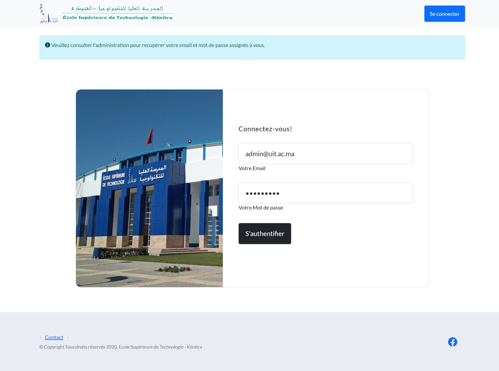Auf der Anmeldeseite finden Sie eine Nachricht, die den Benutzer, der auf die Plattform zugreifen möchte, darüber informiert, dass die Anmeldeinformationen (E-Mail und Passwort) von der Verwaltung abgerufen werden müssen, solange die Anwendung nicht über ein Registrierungssystem verfügt. Bei der Authentifizierung unterscheidet das System, ob es sich um einen Administrator, einen Student oder ein Prüfungskommission handelt, und leitet dann auf die für den jeweiligen Benutzer geeignete Schnittstelle weiter.
Admin-Dashboard - Statistikseite
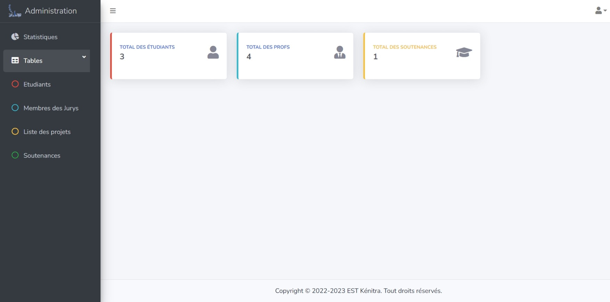Die erste Seite enthält Statistiken über die Gesamtzahl der Student, Lehrer und Verteidigungen.
Admin-Dashboard - Studenten- & Professorenseiten
Der Administrator hat die Möglichkeit, einen Student oder eine Prüfungskommission hinzuzufügen, zu bearbeiten, zu löschen oder anzuzeigen. Die Informationen der Student oder der Prüfungskommissionen sowie die Aktionsschaltflächen werden in einer dynamischen Tabelle angezeigt.
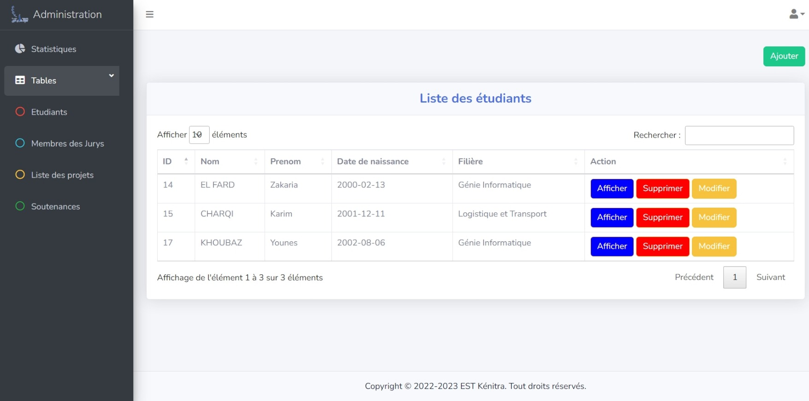 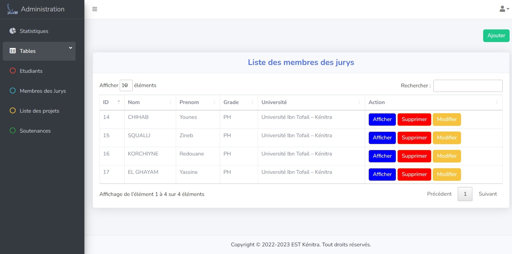Für die Seite der Projekte und der Verteidigungen im Admin-Dashboard. Wir werden auf sie später anhand eines Anwendungsbeispiels eingehen.
Studentenseite
Melden wir uns mit einem Studentenkonto an!
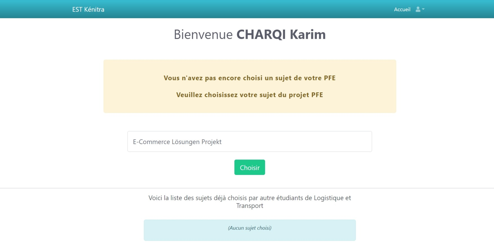Nach dem Einloggen können wir sehen, dass der Student sein Projektthema noch nicht gewählt hat, so dass die Wahl eines Themas gewährt wird, zusammen mit den Projektthemen, die bereits von anderen Studenten gewählt wurden. Die letztgenannte Information ist wichtig, um zu vermeiden, dass Student das gleiche Thema wählen, da dies zur Ablehnung des vorgeschlagenen Themas führen kann.
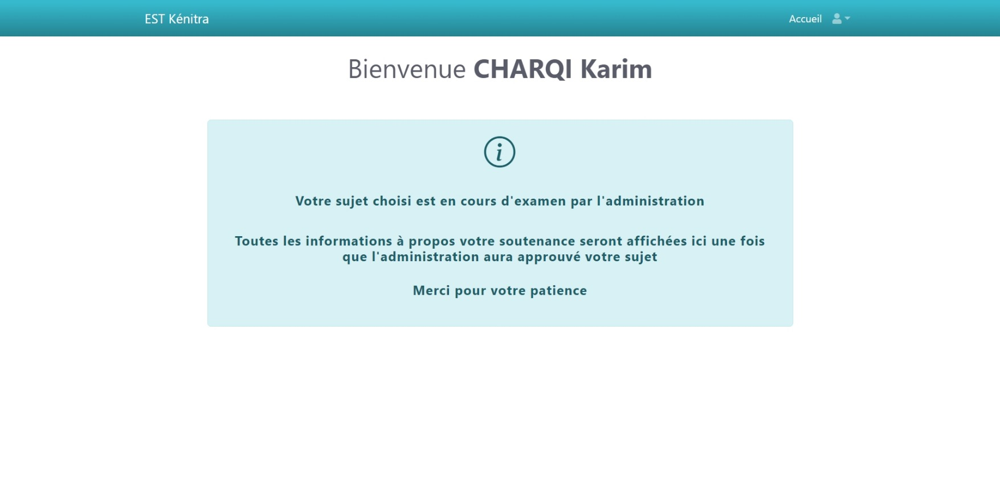Nachdem die Schüler ihr Projektthema gewählt haben, erscheint es auf die Seite der Projekte im Admin-Dashbaord zur Entscheidung.
Admin-Dashbaord - Seite der Projekte
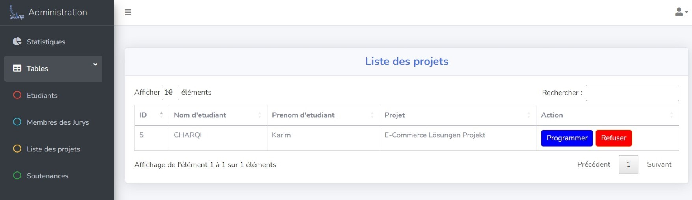Der Administrator kann die Liste der von jedem Student gewählten Projekte einsehen. Er hat auch die Möglichkeit, das Projekt zu akzeptieren und somit eine Verteidigung für diesen Student zu planen oder das Projekt abzulehnen.
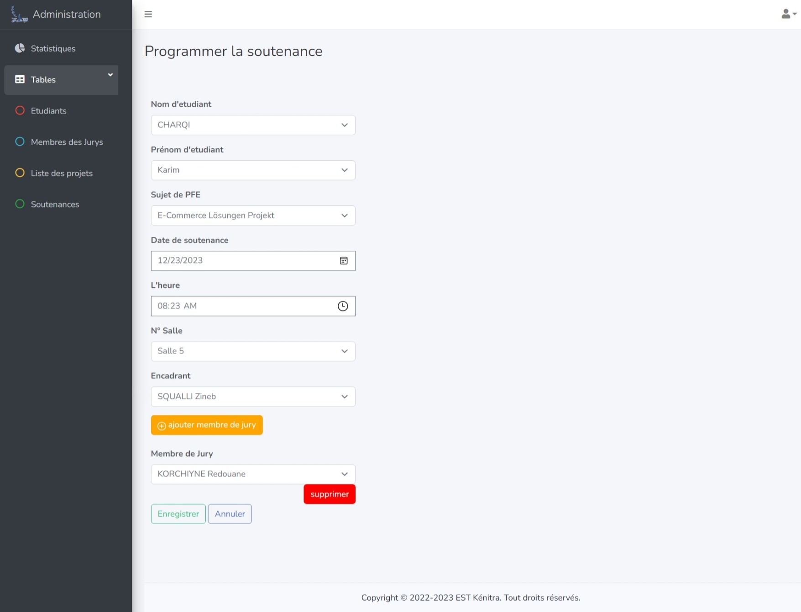Bei der Planung einer Verteidigung, müsst der Administartor einen Raum reservieren, die Prüfungskommissionen zuweisen und ein bestimmtes Datum und Uhrzeit festlegen.
Das System prüft vor dem Speichern, ob es eine andere Verteidigung mit derselben Uhrzeit und demselben Ort gibt. Ein Fehler tritt auf, wenn der Fall wahr ist.
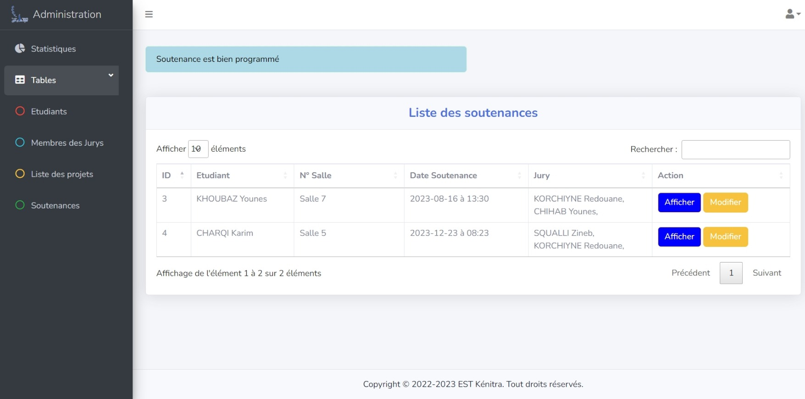Nachdem die Verteidigung erfolgreich fixiert wurde, erscheint sie auf der Seite der Verteidigung, um sie zu bearbeiten oder anzuzeigen. Sie können sie nicht löschen, da das System alle Verteidigungen archiviert.
Studentenseite - nach die Verteidigung wurde bestimmt
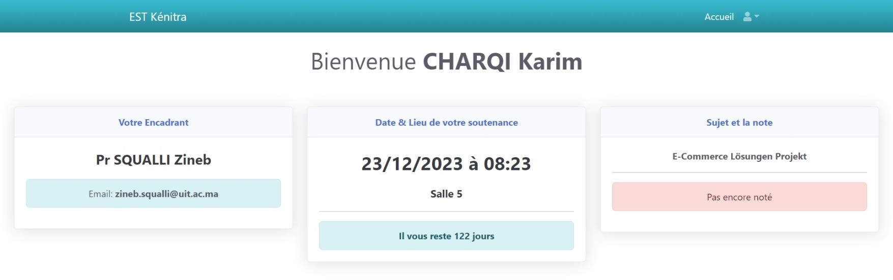Nach der Registrierung der Verteidigung kann der Student alle wichtigen Informationen über seine Verteidigung einsehen. Sein betreuender Professor für das Projekt und seine E-Mail, das Datum und der Raum, in dem die Soutane stattfinden wird und die verbleibenden Tage dafür. das gewählte Projektthema und die Note, die später vergeben wird.
Seite der Prüfungskommissionen
Melden wir uns mit einem Professorenkonto an!
Die Seite der Prüfungskommissionen enthält eine dynamische Tabelle, in der alle von ihm betreuten Verteidigungen angezeigt werden. Die Prüfungskommissionen hat die Möglichkeit, diese zu notieren.
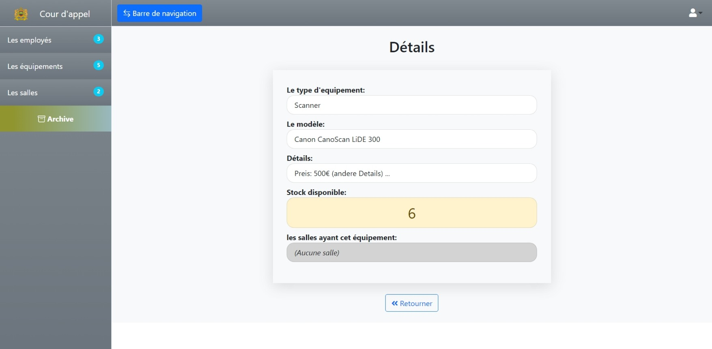nachdem die Note vergeben wurde, erscheint sie auf der Studentenseite sowie auf der Detailseite der Verteidigung im admin-dashbaord.
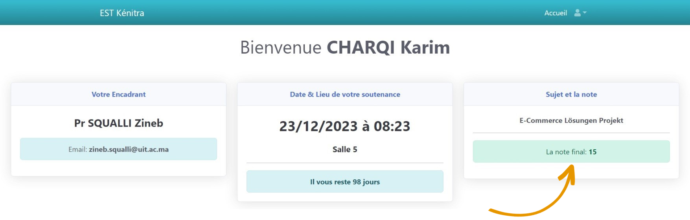 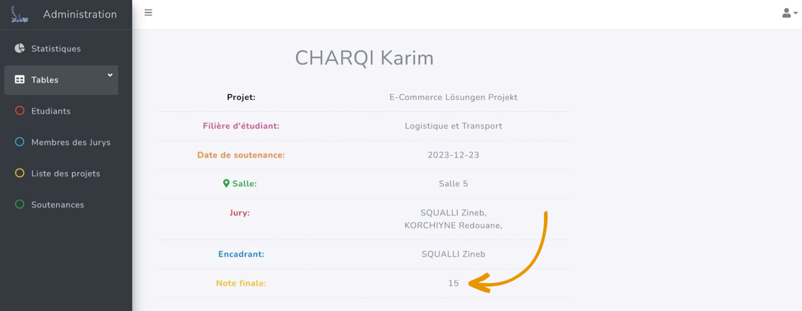Vielen Dank, dass Sie sich die Zeit genommen haben, bis hierher zu lesen 🧡
Copyright © 2023 Younes Khoubaz. Alle Rechte vorbehalten.